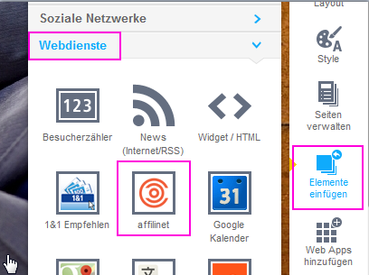
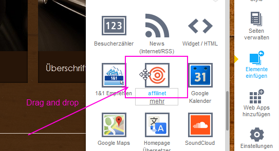
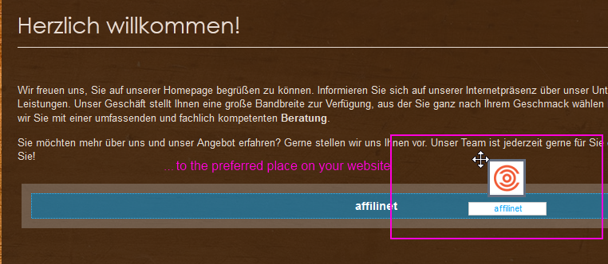
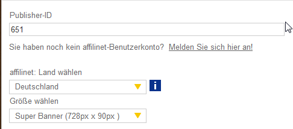

Widget Installation
If you want to integrate an affilinet Performance Ads creative via 1&1 myWebsite, please make the following steps:
- Signup to 1&1 MyWebsite if you do not have an account yet
- Login to your 1&1 myWebsite Account
- Select your Website you want to edit
- Choose "Insert element" in the navigation on the right side

- Select "Webservices" and select the affilinet widget within the webservices elements
- Move the affilinet widget per drag and drop on the preferred place on your website. A configuration dialog will open


- Enter your affilinet publisher ID, choose the affilinet country platform your publisher account belongs to and one of the offered ad-formats and save your settings

- With the preview on the left corner you can see how it will look like on your website
That's it! From now on, targeted ads will be placed within the content of your website where you have placed the widget.